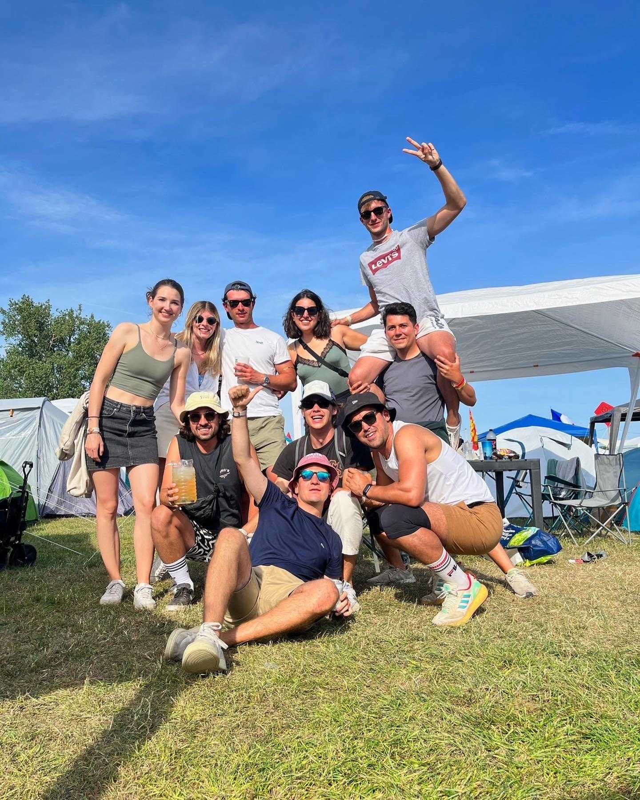
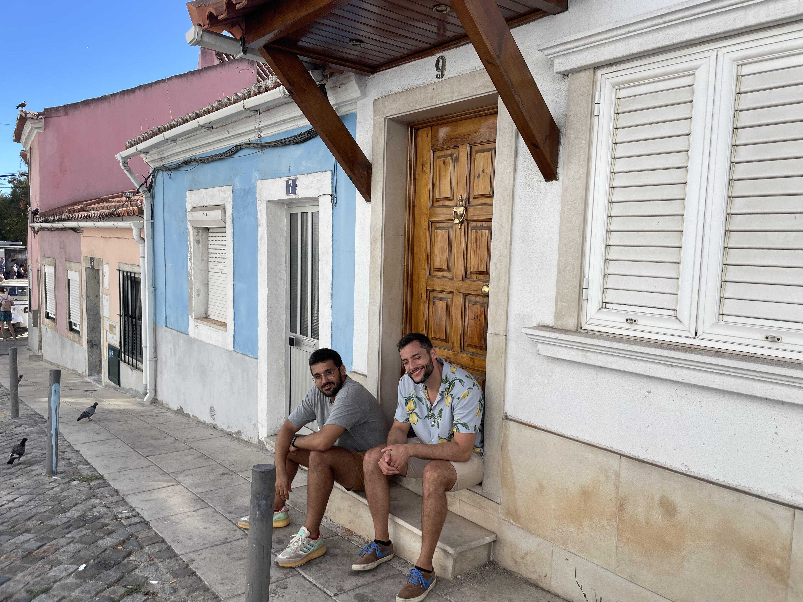
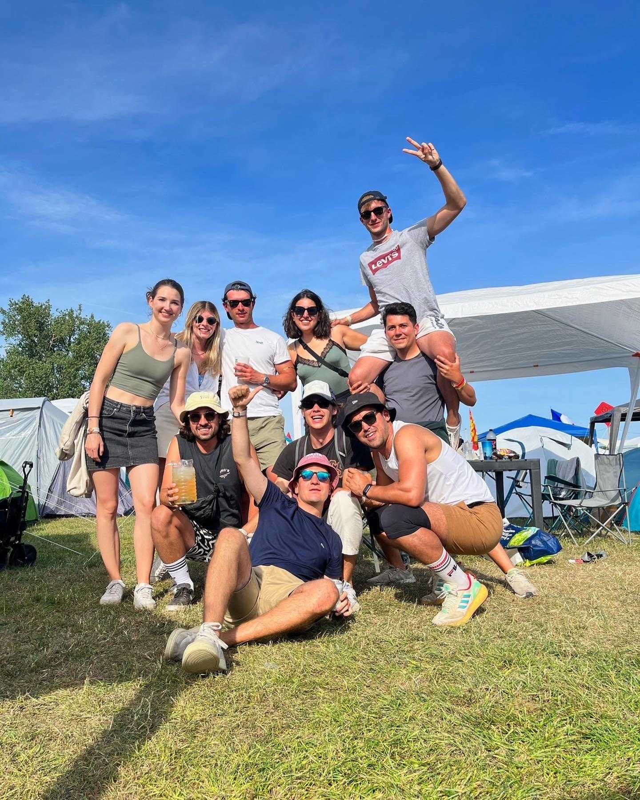
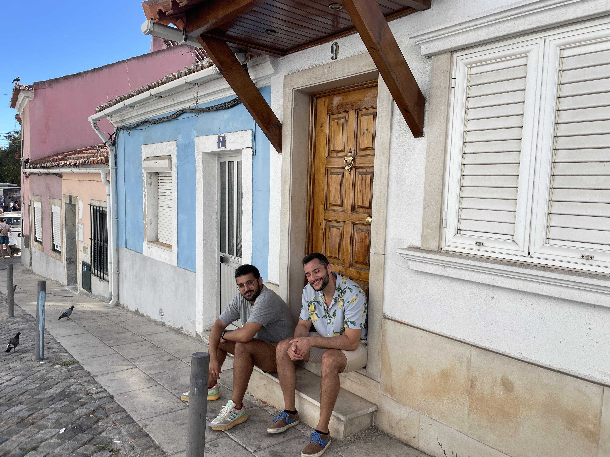

About Me
Yet another Spaniard passionate about Quantitative Finance,
Algorithmic Trading, Software Engineering and Digital Signal
Processing.
Hi there, It's Mo! üëã I am an extrovert person, adventurous and
wild (or what I think of myself); I like to spend time traveling
and exercising, trying to figure out how to improve myself. I have
been playing rugby & football for years, a significant number of
injuries and fractures can prove it. Nowadays, I mostly spend few
hours at the gym and do some kick-boxing.
As cliché as it may sound, I do love music, I do really love
music, any kind! I'm an active audio-effects creator; Sadly, I am
not a musician but my background in physics and signal processing
allows me to develop my own effects and share them with the
community.
In every tech movie, there's a crazy hacker that can do
everything, right? Those poor reproductions are based on me!
Give me enough time and coffee, a high dose of caffeine, and I
will try to figure out- or invent- anything.
I am a geek enthusiast! I started coding when I got my first PC in
2006. I remember my first C code; it still makes my hair stand on
end. Ever since that moment, I knew I was born to be an engineer.
Nowadays, I hold a BSc & MSc in Telecommunications Engineer from
the University of Granada, Spain.
If you are looking for someone passionate about technology with a
solid background in algorithmic trading, algorithm design,
optimizations, and digital signal processing, someone
enthusiastic, responsible and wishing to develop his skill-set,
you just found him!
I commonly understand and adapt myself to the local conditions and
the working environment, independently but also effectively as
part of a team. I love solving complex problems and working
alongside talented people, as someone said, if you’re the smartest
person in the room, you’re in the wrong place.
I am continuously trying to figure out the best practices and
useful design patterns to develop robust, maintainable and
scalable solutions. I am passionate about electronics and software
engineering, and both are part of my daily hobbies.
I am an active open-source contributor. I have personally been
involved very intimately in projects linked to cutting-edge
technologies by designing robust algorithms related to generic
fields like digital signal processing, positioning systems, big
data analysis, and machine learning.
Have a look into my
GitHub profile to see
some of my projects. Don't be shy, feel free to contact me if you
have any questions.
 


